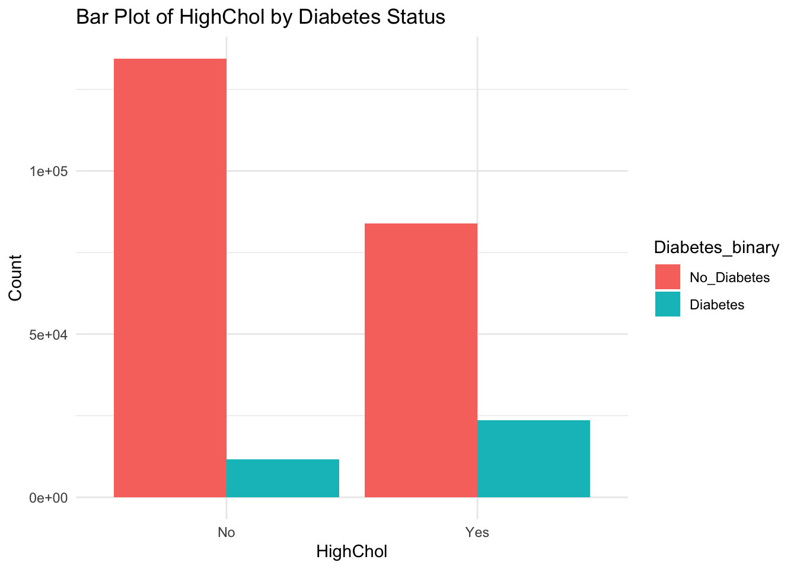
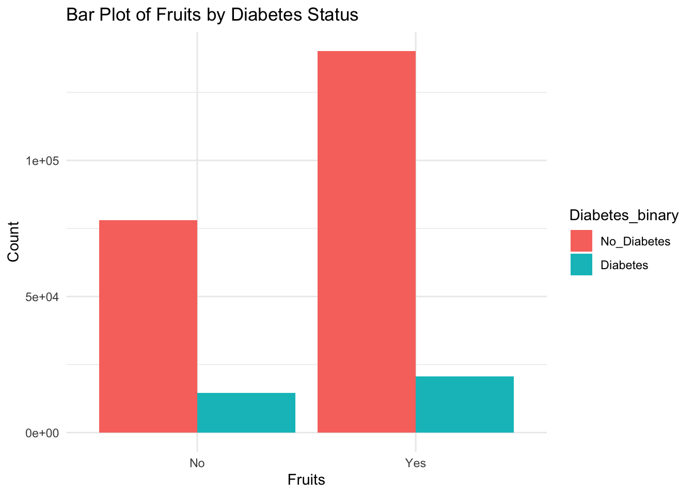

library(tidyverse)EDA of Diabetes Health Indicators Dataset
Introduction
The data used in these analyses are the results of a yearly survey that collects health-related data on Americans. The majority of the variables in this data set are binary (yes/no). Their are some variables that have more than two levels including GenHlth, Age, Education, and Income. The only variables with a numeric data type are BMI, MentHlth, and PhysHlth.
The purpose of our exploratory data analysis is to ensure that all data types are correct, so any variables that need to be converted to factor data type will be adjusted here. It is also good practice to determine the rate of missing values in an EDA, so if there are any missing values they can be dealt with now instead of causing issues in the modeling phase.
Our response variable will ultimately be Diabetes_binary, which has responses of 0 = no diabetes and 1 = diabetes. The goal of modeling will be to see which of the other variables are good at predicting diabetes.
Data
Use a relative path to import the data.
diabetes_data <- read_csv('diabetes_binary_health_indicators_BRFSS2015.csv')Rows: 253680 Columns: 22
── Column specification ────────────────────────────────────────────────────────
Delimiter: ","
dbl (22): Diabetes_binary, HighBP, HighChol, CholCheck, BMI, Smoker, Stroke,...
ℹ Use `spec()` to retrieve the full column specification for this data.
ℹ Specify the column types or set `show_col_types = FALSE` to quiet this message.str(diabetes_data)spc_tbl_ [253,680 × 22] (S3: spec_tbl_df/tbl_df/tbl/data.frame)
$ Diabetes_binary : num [1:253680] 0 0 0 0 0 0 0 0 1 0 ...
$ HighBP : num [1:253680] 1 0 1 1 1 1 1 1 1 0 ...
$ HighChol : num [1:253680] 1 0 1 0 1 1 0 1 1 0 ...
$ CholCheck : num [1:253680] 1 0 1 1 1 1 1 1 1 1 ...
$ BMI : num [1:253680] 40 25 28 27 24 25 30 25 30 24 ...
$ Smoker : num [1:253680] 1 1 0 0 0 1 1 1 1 0 ...
$ Stroke : num [1:253680] 0 0 0 0 0 0 0 0 0 0 ...
$ HeartDiseaseorAttack: num [1:253680] 0 0 0 0 0 0 0 0 1 0 ...
$ PhysActivity : num [1:253680] 0 1 0 1 1 1 0 1 0 0 ...
$ Fruits : num [1:253680] 0 0 1 1 1 1 0 0 1 0 ...
$ Veggies : num [1:253680] 1 0 0 1 1 1 0 1 1 1 ...
$ HvyAlcoholConsump : num [1:253680] 0 0 0 0 0 0 0 0 0 0 ...
$ AnyHealthcare : num [1:253680] 1 0 1 1 1 1 1 1 1 1 ...
$ NoDocbcCost : num [1:253680] 0 1 1 0 0 0 0 0 0 0 ...
$ GenHlth : num [1:253680] 5 3 5 2 2 2 3 3 5 2 ...
$ MentHlth : num [1:253680] 18 0 30 0 3 0 0 0 30 0 ...
$ PhysHlth : num [1:253680] 15 0 30 0 0 2 14 0 30 0 ...
$ DiffWalk : num [1:253680] 1 0 1 0 0 0 0 1 1 0 ...
$ Sex : num [1:253680] 0 0 0 0 0 1 0 0 0 1 ...
$ Age : num [1:253680] 9 7 9 11 11 10 9 11 9 8 ...
$ Education : num [1:253680] 4 6 4 3 5 6 6 4 5 4 ...
$ Income : num [1:253680] 3 1 8 6 4 8 7 4 1 3 ...
- attr(*, "spec")=
.. cols(
.. Diabetes_binary = col_double(),
.. HighBP = col_double(),
.. HighChol = col_double(),
.. CholCheck = col_double(),
.. BMI = col_double(),
.. Smoker = col_double(),
.. Stroke = col_double(),
.. HeartDiseaseorAttack = col_double(),
.. PhysActivity = col_double(),
.. Fruits = col_double(),
.. Veggies = col_double(),
.. HvyAlcoholConsump = col_double(),
.. AnyHealthcare = col_double(),
.. NoDocbcCost = col_double(),
.. GenHlth = col_double(),
.. MentHlth = col_double(),
.. PhysHlth = col_double(),
.. DiffWalk = col_double(),
.. Sex = col_double(),
.. Age = col_double(),
.. Education = col_double(),
.. Income = col_double()
.. )
- attr(*, "problems")=<externalptr> Convert all binary/categorical variables to factors with meaningful level names.
diabetes_data <- diabetes_data |>
mutate(
Diabetes_binary = factor(Diabetes_binary, levels = c(0, 1), labels = c("No_Diabetes", "Diabetes")),
HighBP = factor(HighBP, levels = c(0, 1), labels = c("No", "Yes")),
HighChol = factor(HighChol, levels = c(0, 1), labels = c("No", "Yes")),
CholCheck = factor(CholCheck, levels = c(0, 1), labels = c("No", "Yes")),
Smoker = factor(Smoker, levels = c(0, 1), labels = c("No", "Yes")),
Stroke = factor(Stroke, levels = c(0, 1), labels = c("No", "Yes")),
HeartDiseaseorAttack = factor(HeartDiseaseorAttack, levels = c(0, 1), labels = c("No", "Yes")),
PhysActivity = factor(PhysActivity, levels = c(0, 1), labels = c("No", "Yes")),
Fruits = factor(Fruits, levels = c(0, 1), labels = c("No", "Yes")),
Veggies = factor(Veggies, levels = c(0, 1), labels = c("No", "Yes")),
HvyAlcoholConsump = factor(HvyAlcoholConsump, levels = c(0, 1), labels = c("No", "Yes")),
AnyHealthcare = factor(AnyHealthcare, levels = c(0, 1), labels = c("No", "Yes")),
NoDocbcCost = factor(NoDocbcCost, levels = c(0, 1), labels = c("No", "Yes")),
GenHlth = factor(GenHlth, levels = 1:5, labels = c("Excellent", "Very_Good", "Good", "Fair", "Poor")),
DiffWalk = factor(DiffWalk, levels = c(0, 1), labels = c("No", "Yes")),
Sex = factor(Sex, levels = c(0, 1), labels = c("Female", "Male")),
Age =factor(Age, levels = 1:13, labels = c("18_24", "25_29", "30_34", "35_39", "40_44", "45_49",
"50_54", "55_59", "60_64", "65_69", "70_74", "75_79", "80_or_older")),
Education = factor(Education, levels = 1:6, labels = c("Never_Attended", "Elementary", "Some_High_School",
"High_School_Graduate", "Some_College",
"College_Graduate")),
Income = factor(Income, levels = 1:8, labels = c("Less_than_10k", "10k_to_15k",
"15k_to_20k", "20k_to_25k",
"25k_to_35k", "35k_to_50k",
"50k_to_75k", "75k_or_more"))
)
str(diabetes_data)tibble [253,680 × 22] (S3: tbl_df/tbl/data.frame)
$ Diabetes_binary : Factor w/ 2 levels "No_Diabetes",..: 1 1 1 1 1 1 1 1 2 1 ...
$ HighBP : Factor w/ 2 levels "No","Yes": 2 1 2 2 2 2 2 2 2 1 ...
$ HighChol : Factor w/ 2 levels "No","Yes": 2 1 2 1 2 2 1 2 2 1 ...
$ CholCheck : Factor w/ 2 levels "No","Yes": 2 1 2 2 2 2 2 2 2 2 ...
$ BMI : num [1:253680] 40 25 28 27 24 25 30 25 30 24 ...
$ Smoker : Factor w/ 2 levels "No","Yes": 2 2 1 1 1 2 2 2 2 1 ...
$ Stroke : Factor w/ 2 levels "No","Yes": 1 1 1 1 1 1 1 1 1 1 ...
$ HeartDiseaseorAttack: Factor w/ 2 levels "No","Yes": 1 1 1 1 1 1 1 1 2 1 ...
$ PhysActivity : Factor w/ 2 levels "No","Yes": 1 2 1 2 2 2 1 2 1 1 ...
$ Fruits : Factor w/ 2 levels "No","Yes": 1 1 2 2 2 2 1 1 2 1 ...
$ Veggies : Factor w/ 2 levels "No","Yes": 2 1 1 2 2 2 1 2 2 2 ...
$ HvyAlcoholConsump : Factor w/ 2 levels "No","Yes": 1 1 1 1 1 1 1 1 1 1 ...
$ AnyHealthcare : Factor w/ 2 levels "No","Yes": 2 1 2 2 2 2 2 2 2 2 ...
$ NoDocbcCost : Factor w/ 2 levels "No","Yes": 1 2 2 1 1 1 1 1 1 1 ...
$ GenHlth : Factor w/ 5 levels "Excellent","Very_Good",..: 5 3 5 2 2 2 3 3 5 2 ...
$ MentHlth : num [1:253680] 18 0 30 0 3 0 0 0 30 0 ...
$ PhysHlth : num [1:253680] 15 0 30 0 0 2 14 0 30 0 ...
$ DiffWalk : Factor w/ 2 levels "No","Yes": 2 1 2 1 1 1 1 2 2 1 ...
$ Sex : Factor w/ 2 levels "Female","Male": 1 1 1 1 1 2 1 1 1 2 ...
$ Age : Factor w/ 13 levels "18_24","25_29",..: 9 7 9 11 11 10 9 11 9 8 ...
$ Education : Factor w/ 6 levels "Never_Attended",..: 4 6 4 3 5 6 6 4 5 4 ...
$ Income : Factor w/ 8 levels "Less_than_10k",..: 3 1 8 6 4 8 7 4 1 3 ...Determine Rate of Missing Values Below we find that there are no missing values.
sum_na <- function(column){
sum(is.na(column))
}
na_counts <- diabetes_data |>
summarize(across(everything(), sum_na))
na_counts# A tibble: 1 × 22
Diabetes_binary HighBP HighChol CholCheck BMI Smoker Stroke
<int> <int> <int> <int> <int> <int> <int>
1 0 0 0 0 0 0 0
# ℹ 15 more variables: HeartDiseaseorAttack <int>, PhysActivity <int>,
# Fruits <int>, Veggies <int>, HvyAlcoholConsump <int>, AnyHealthcare <int>,
# NoDocbcCost <int>, GenHlth <int>, MentHlth <int>, PhysHlth <int>,
# DiffWalk <int>, Sex <int>, Age <int>, Education <int>, Income <int>Summarizations
This section contains meaningful summary statistics and plots about the data (especially as it relates to the response).
Describe numerical data - Below are summary statistics, such as count, mean, sd, etc., for the three numerical variables in the data set.
numeric_data <- diabetes_data |>
select_if(is.numeric)
psych::describe(numeric_data) vars n mean sd median trimmed mad min max range skew kurtosis
BMI 1 253680 28.38 6.61 27 27.68 4.45 12 98 86 2.12 11.00
MentHlth 2 253680 3.18 7.41 0 1.04 0.00 0 30 30 2.72 6.44
PhysHlth 3 253680 4.24 8.72 0 1.77 0.00 0 30 30 2.21 3.50
se
BMI 0.01
MentHlth 0.01
PhysHlth 0.02Below are contingency tables for the factor variables with respect to our Diabetes_binary response variable.
categorical_data <- diabetes_data |>
select_if(is.factor) |>
select(-Diabetes_binary)
for (var in names(categorical_data)) {
print(var)
print(table(categorical_data[[var]], diabetes_data$Diabetes_binary))
}[1] "HighBP"
No_Diabetes Diabetes
No 136109 8742
Yes 82225 26604
[1] "HighChol"
No_Diabetes Diabetes
No 134429 11660
Yes 83905 23686
[1] "CholCheck"
No_Diabetes Diabetes
No 9229 241
Yes 209105 35105
[1] "Smoker"
No_Diabetes Diabetes
No 124228 17029
Yes 94106 18317
[1] "Stroke"
No_Diabetes Diabetes
No 211310 32078
Yes 7024 3268
[1] "HeartDiseaseorAttack"
No_Diabetes Diabetes
No 202319 27468
Yes 16015 7878
[1] "PhysActivity"
No_Diabetes Diabetes
No 48701 13059
Yes 169633 22287
[1] "Fruits"
No_Diabetes Diabetes
No 78129 14653
Yes 140205 20693
[1] "Veggies"
No_Diabetes Diabetes
No 39229 8610
Yes 179105 26736
[1] "HvyAlcoholConsump"
No_Diabetes Diabetes
No 204910 34514
Yes 13424 832
[1] "AnyHealthcare"
No_Diabetes Diabetes
No 10995 1422
Yes 207339 33924
[1] "NoDocbcCost"
No_Diabetes Diabetes
No 200722 31604
Yes 17612 3742
[1] "GenHlth"
No_Diabetes Diabetes
Excellent 44159 1140
Very_Good 82703 6381
Good 62189 13457
Fair 21780 9790
Poor 7503 4578
[1] "DiffWalk"
No_Diabetes Diabetes
No 188780 22225
Yes 29554 13121
[1] "Sex"
No_Diabetes Diabetes
Female 123563 18411
Male 94771 16935
[1] "Age"
No_Diabetes Diabetes
18_24 5622 78
25_29 7458 140
30_34 10809 314
35_39 13197 626
40_44 15106 1051
45_49 18077 1742
50_54 23226 3088
55_59 26569 4263
60_64 27511 5733
65_69 25636 6558
70_74 18392 5141
75_79 12577 3403
80_or_older 14154 3209
[1] "Education"
No_Diabetes Diabetes
Never_Attended 127 47
Elementary 2860 1183
Some_High_School 7182 2296
High_School_Graduate 51684 11066
Some_College 59556 10354
College_Graduate 96925 10400
[1] "Income"
No_Diabetes Diabetes
Less_than_10k 7428 2383
10k_to_15k 8697 3086
15k_to_20k 12426 3568
20k_to_25k 16081 4054
25k_to_35k 21379 4504
35k_to_50k 31179 5291
50k_to_75k 37954 5265
75k_or_more 83190 7195for (var in names(categorical_data)) {
p <- ggplot(diabetes_data, aes_string(x = var, fill = "Diabetes_binary")) +
geom_bar(position = "dodge") +
labs(title = paste("Bar Plot of", var, "by Diabetes Status"), x = var, y = "Count") +
theme_minimal()
print(p)
}Warning: `aes_string()` was deprecated in ggplot2 3.0.0.
ℹ Please use tidy evaluation idioms with `aes()`.
ℹ See also `vignette("ggplot2-in-packages")` for more information.

Below are histograms of our numeric data
for (var in names(numeric_data)) {
p <- ggplot(diabetes_data, aes_string(x = var)) +
geom_histogram(binwidth = 1, fill = "blue", color = "black", alpha = 0.7) +
labs(title = paste("Histogram of", var), x = var, y = "Frequency") +
theme_minimal()
print(p)
}Finally, we have a correlation matrix of our numeric data
cor(numeric_data) BMI MentHlth PhysHlth
BMI 1.00000000 0.08531016 0.1211411
MentHlth 0.08531016 1.00000000 0.3536189
PhysHlth 0.12114111 0.35361887 1.0000000